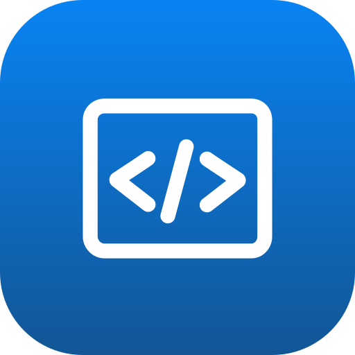
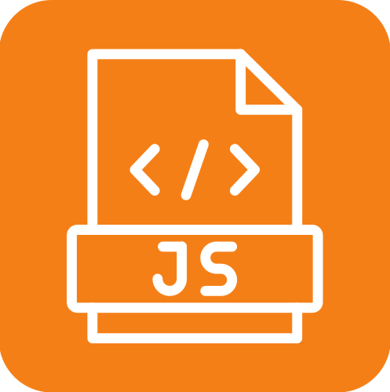
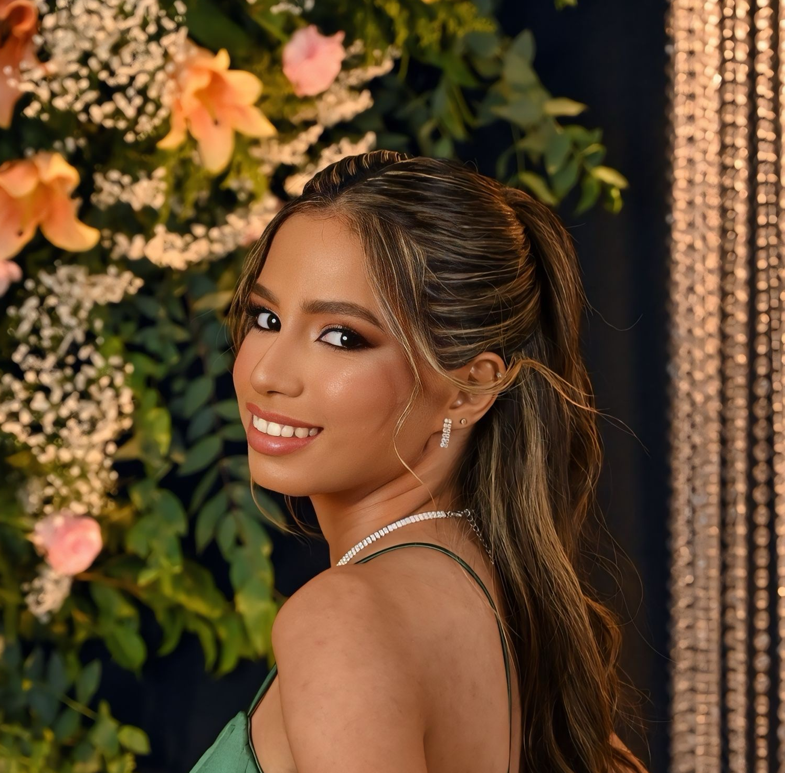
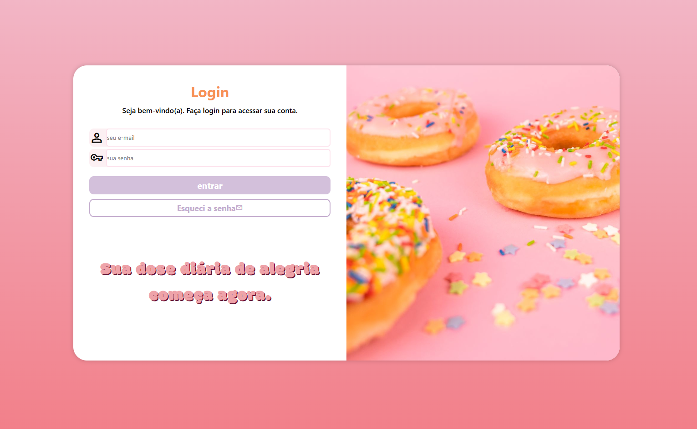
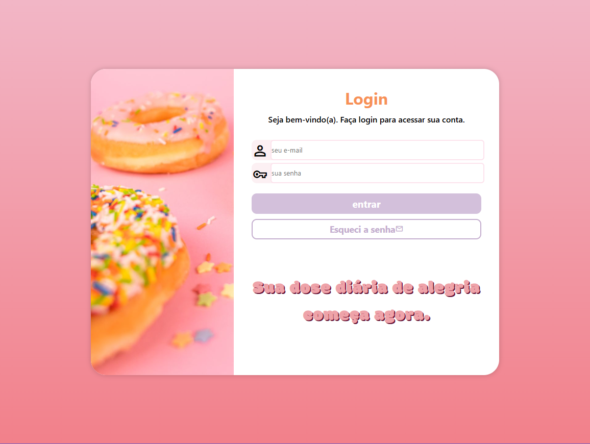
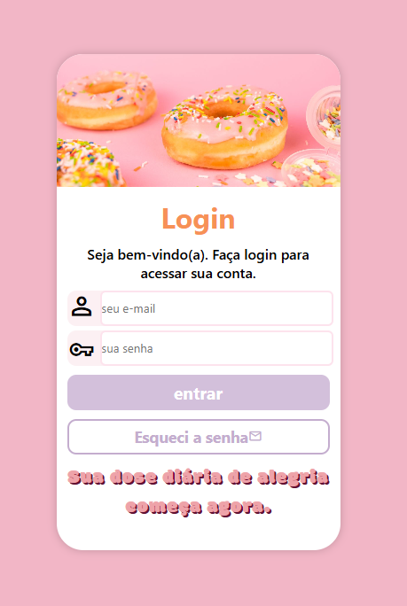
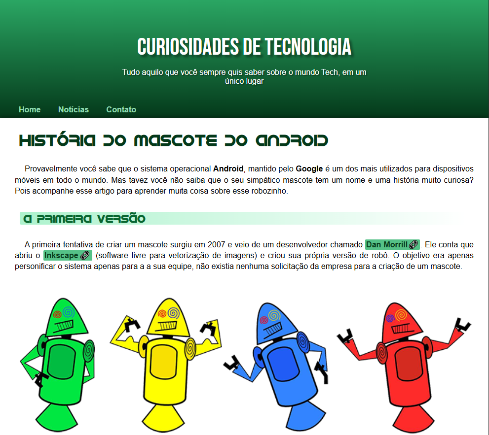

Tech Stack



html
css
javascript
90%
85%
50%

Sou uma desenvolvedora em formação e estudante de Análise e Desenvolvimento de Sistemas apaixonada por tecnologia. Gosto de transformar ideias em projetos e aprender como a tecnologia pode criar soluções e experiências incríveis.
Este portfólio é um espaço para compartilhar meus projetos, minha evolução e um pouco do que venho construindo durante minha jornada na programação. 🚀


html
css
javascript
2026 - cursando
Universidade Potiguar UnP
2026
Fundação Bradesco

Este projeto foi criado para desenvolver uma tela de acesso simples e elegante, simulando a entrada de usuários em uma plataforma. A proposta foi dar atenção aos detalhes da interface, desde a disposição dos campos até a aparência dos botões e elementos da página.
Este projeto foi criado para desenvolver uma tela de acesso simples e elegante, simulando a entrada de usuários em uma plataforma. A proposta foi dar atenção aos detalhes da interface, desde a disposição dos campos até a aparência dos botões e elementos da página. A construção da tela me permitiu colocar em prática conhecimentos de HTML e CSS, explorando formas de organizar componentes, trabalhar com cores, fontes, espaçamentos e diferentes propriedades de estilização. Além de servir como exercício de desenvolvimento front-end, o projeto representa uma das etapas da minha evolução na criação de interfaces para aplicações web. Tecnologias: HTML5 e CSS3.
A construção da tela me permitiu colocar em prática conhecimentos de HTML e CSS, explorando formas de organizar componentes, trabalhar com cores, fontes, espaçamentos e diferentes propriedades de estilização. Além de servir como exercício de desenvolvimento front-end, o projeto representa uma das etapas da minha evolução na criação de interfaces para aplicações web.



Um projeto que apresenta minhas redes sociais em uma interface de celular. Ao clicar no menu superior, o usuário pode acessar rapidamente meus perfis no LinkedIn, GitHub e Instagram.
Neste projeto desenvolvi uma interface inspirada em um smartphone, onde o usuário pode interagir com a tela e acessar diferentes redes sociais através do menu superior. Ao clicar no menu, são exibidas as opções de LinkedIn, GitHub e Instagram, permitindo navegar para cada perfil de forma simples e interativa. A proposta foi criar uma experiência diferente de uma página convencional, utilizando o formato de um celular como elemento principal da interface.
Neste projeto desenvolvi uma interface inspirada em um smartphone, onde o usuário pode interagir com a tela e acessar diferentes redes sociais através do menu superior.
Neste projeto desenvolvi uma interface inspirada em um smartphone, onde o usuário pode interagir com a tela e acessar diferentes redes sociais através do menu superior. Ao clicar no menu, são exibidas as opções de LinkedIn, GitHub e Instagram, permitindo navegar para cada perfil de forma simples e interativa. A proposta foi criar uma experiência diferente de uma página convencional, utilizando o formato de um celular como elemento principal da interface.